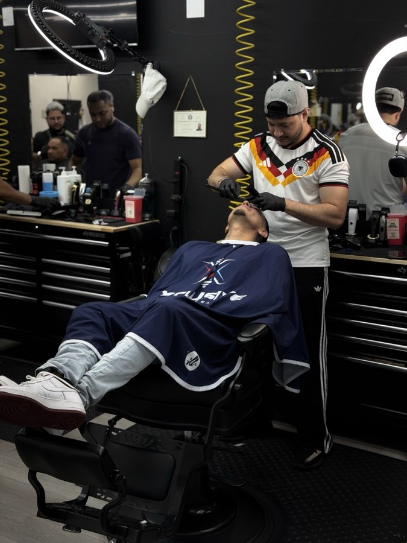

Style
The Top 5 Fade Styles Dominating 2025

Every year brings shifts in what clients are asking for, and 2025 has been no different. At Xclusive Barbershop, we've seen clear trends emerge — certain styles dominating our chair week after week. Here are the five fade styles that are having their moment right now.
#1 — The Mid Taper Fade
The mid taper has taken over as the most requested cut of the year. It starts fading around the temples and gradually blends down, leaving more length on top for styling freedom. It works on every hair type and face shape, which is why it's become the go-to for clients who want a clean, modern look without going too sharp.
#2 — The Skin Fade
Nothing says precision like a clean skin fade. The hair goes all the way down to bare skin at the sides and back, with a gradual blend upward. It's a high-maintenance style that requires a touch-up every 1–2 weeks to stay sharp, but clients love the contrast it creates with longer hair on top.
#3 — The Low Taper
For clients who want a subtle, professional look, the low taper is the answer. The fade starts just above the ear and keeps the sides relatively full. It's versatile enough for a boardroom or a weekend out — and it grows out gracefully, which means you can stretch appointments a bit longer.
#4 — The Drop Fade
The drop fade curves downward behind the ear, following the natural shape of the head. It gives the back of the head a clean, rounded silhouette and works especially well with curly or wavy hair on top. We've seen a surge in requests for this one combined with a textured crop — it's a sharp combination.
#5 — The Temp Fade
The temp fade — short for temple fade — focuses on sharpening the hairline at the temples and forehead. It frames the face and makes any haircut look more intentional. Clients often add this to their existing style as a finishing touch rather than a standalone cut. Paired with a beard lineup, it's one of the cleanest looks we do.
Which One Is Right for You?
The best fade is the one that works for your hair texture, face shape, and lifestyle. When you come in, our barbers will assess all three and recommend what will look sharpest on you — not just what's trending. That's the Xclusive difference.